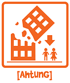
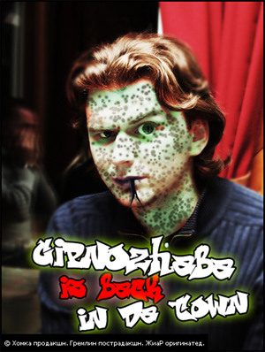
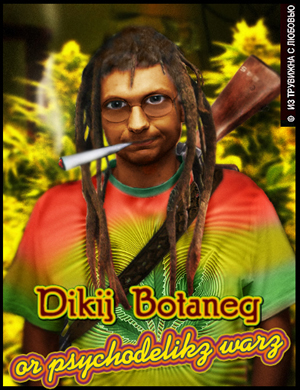
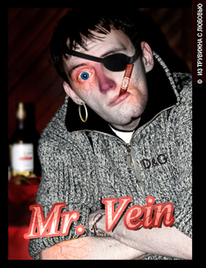
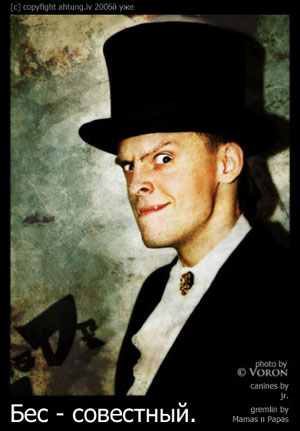
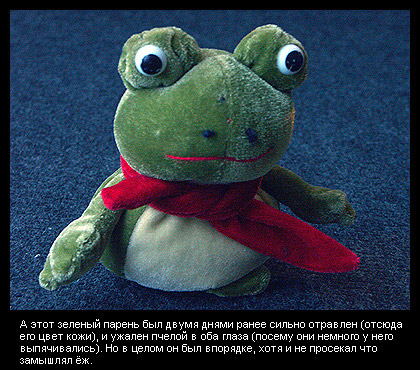

Автор статьи:

Зиновий Липинский
(Босния-Герцоговина)
Не выносит передряг и кощунства. Лелеет надежды на очередное утреннее пробуждение.
Автор статьи:
Зиновий Липинский
(Босния-Герцоговина)
Не выносит передряг и кощунства. Лелеет надежды на очередное утреннее пробуждение.
Проект ahtung.lv появился на свет в сентябре 2004 года, как «публичная отрыжка некоторых творческих людей на то, что происходит за соседним столиком больше не наливать». В те времена популярные сетевые ресурсы самовыражения — livejournal.com, imdb.com, delfi.lv — не удовлетворяли высоким требованиям латвийских дизайнеров и проект был запущен.

Случайно нарисованная
картинка стала символом
ahtung.lv узнаваемым
во всём мире.
Целевая аудитория сайта сразу же была найдена оповещением по электронной почте или интернет-пейджерами. И уже к середине 2005 года, не без помощи новых участников редакторского коллектива ahtung.lv достиг своего апогея. Одна из известнейших статей того времени — разработка предупреждающих знаков для шведских туристов посещающих Ригу — была с восторгом воспринята и разрекламирована читателями. Полученные символы не были установлены на туристических тропах латвийской столицы и их установка не была проспонсирована правительством.
С ростом популярности проект обрастал слухами и неуместными вопросами. К примеру, проводилась связь между названием ахтунг и окончанием слова «апогей». Читатели активно участвовали в политической жизни сайта, приглашая редколлегию сплавляться по Салаце или хорошо посидеть в Касабланке. Но постороннему человеку всё это, и даже данная статья не даёт представления о том, что же такое ahtung.lv и почему о нём так много говорят.
Нам показалось, что наиболее близким к ответу будет интервью с создателями проекта.
«Вечером 16-го сентября 2004-го роли доброго и злого ангелов исполняли совсем нетипичные для ангелов персонажи.(вступительный текст к сайту ahtung.lv)
В качестве первого выступал абстрактный образ американского менеджера с человеческим лицом. В сознании он вырисовывался неким черепашкой-ниндзя со скрученной газетой New York Times в руках. Вторым ангелом стал Двуликий Макс, который в сознании вообще никак не изображался.
Ясности — кто из ангелов хороший, а кто Двуликий Макс — не было.»
Зиновий:
День добрый!
Нас тут Ромочка Jr., Ваня Яррув, Андрей Хомка и Зиновий Зиновий.
Последний прикольный чиж, потому что он будет одновременно и брать интервью и отвечать на вопросы. Давайте с банального — Как родился ахтунг?

Рома Jr — такой он по версии ахтунга.

Ваня Яррув — совмещает работу редактора ahtung.lv
и ведущего иллюстратора компании True Vision.

Андрей Хомка из-за природной приспособляемости
легко влился в работу проекта.

Денис Уги-Пуги, отсутствовавший во время интервью.
Хомка: Нинаю, наверное в семье ахтунгов.
Яррув: Его Рома пол часа рисовал а потом Сирожа две недели резал. А еще там была сплэш-страница из прожженой сигаретой бумажки несколько месяцев. В виде попы или сердечка, кому как.
З: Это была отличная страница! Я помню что пока я (уже после серёжи) этот сайт пол часа резал вы бегали и жгли бумагу.
Х: А я не застал такова.
З: Кстати, Хомка. Напомни когда и с каким джокером в рукаве ты влился в ахтунг.
Х: Когда когда... Когда пришел в трувижн. Меня заставили. Рома сказал надо.
З: Злые языки говорят о том что ахтунг пишется «achtung», а мы, неучи, пропустили букву «c» и пишем «ahtung». Нас это колышет?
Jr.: Нам на это забить, потому как мы вопреки! Идея родилась в перекуре с Сырожей, который канул в лету.
Ярр: Там был какой-то умысел с этим словом. Протест, что-ли.
З: В общем, каким-то образом сайт родился и создался. Одна из самых знаменитых его статей — про предупреждающие знаки для шведских туристов. У вас есть ещё какие-нибудь любимые статьи?
Jr.: Про жесткий Кекс и дни в Макдональдсе... а ещё про приезд Буша в Латвию... а ещё ещё, про капусту Йорика.
Ярр: Мне очень нравится текст на черном фоне, это считается постом? Все время его перечитываю когда попадаю на сайт. Он возвращает меня на уровень выше и напоминает о дуализме всего сущего.
З:
А ты знаешь, что он взят с моей страницы?
Кстати, нет! Я нагло соврал. Он был написан специально для сайта (его новая порезка была порезана 16 сентября) а потом уже появилось продолжение.
Jr.:
Всё от ахтунга, все истоки оттуда.
А ещё гениальные там слоганы.
З: О да! Слоганы! Я сколько раз жал на рефрешь! (Под логотипом сайта при каждой перезагрузке меняется шутливая фраза, о которой и идёт речь — З.Л.)
Ярр: Слоганы тоже взяты с сайта Липы, кстати.
Jr.: Неправда Ваша. Слоганы выдумывались народным брэинстормом...
З: В специальном слогановом посте. Впрочем, моё мнение, что всё написанное в этом посте — гавно. А слоганы под логотипом регенерируются волшебным образом в сознании далай ламы и передаются нашему серверу. А ещё я горжусь созданной гениальной навигацией со словами "ещё".
З: Из ахтунга в большой интернет, на моей памяти вышли две вещи: это бедная собачка «Шарик не грусти» и картинка с мамаздёнком из статьи про маздай. Из обоих картинок, суки, вырезали копирайты. А про собачку, даже какая-то девочка ругалась, что мы её украли у неё. Бог и Дьявол в одной бороде — Ромочка — потом стал ставить CopyLight, вместо копирайтов — что стало гениальным, на мой взгляд, маркетинговым ходом.
Jr.: Много вариаций, CopyFight, CopyMight, CopyKnight, CopyNight итд
Ярр: Самое лучшее, по-моему, подписывать все внизу справа одним словом «скребок». Это слово нельзя вырезать.
Jr.: Кстати, скребок — тоже эпоха ахтунга!
З: Кермит — тоже эпоха ахтунга. Нельзя вырезать сребок и кермит. Разве что только кермита скребком.
Ярр: А еще на сайте продают сааб. (Единственный случай продажи ахтунга рекламодателям, остался висеть ненужной занозой на самом верху сайта — З.Л.)
З: Причём, продают проданный сааб.
Ярр: Причем, проданый сааб уже продали, но его все еще продают на сайте. Интересно, что слева текста о продаже проданного сааба иногда показывается слоган "Продамся за доллар!". Все как в америке, сочно!
Jr.: Интернет-магазин Ahtung.LV Продаем проданные Саабы!
З: А вы знаете, что указанный на сайте мейл editor@ahtung.lv давным-давно был закрыт из-за спама? И вместо него существует мейл 01@ahtung.lv. Только об этом никто не знает и тонны писем поклонников до нас не доходят.
Jr.: Возможно гугл хотел купить нас? А так как недостучался — купил ю-тюб?
Ярр: Еслиб купил гугл, то назвали бы ahtoong или даже ahtoongle.
З: Я почти уверен, что гугл подсмотрел как сделана наша админка и на всех своих проектах поставил похожую. Жалко что радиослушатели не узнают как сделана наша админка, но мы расскажем об этом внукам.
З: И последний вопрос: Кто виноват что ахтунг сейчас в режиме похтунг? И есть ли будущее?
Jr.: Виновата Клавдия Шульженко — не выпускает новых альбомов — нету вдохновления и как следствие нету времени. И вообще.. .бла бла бла. Нету коллективного драйва.

Кадр из фильма про капусту Йорика
После всего сказанного можно добавить, что проект ahtung.lv лучше всего подойдёт в качестве лёгкой закуски к пиву вместе с кальмарами. Ненавязчиво пролистав сколько-то там страниц с эмоциями редакторов, каждый может натолкнуться на что-то, что поднимет ему настроение. А, согласитесь, поднимающих настроение сайтов, должно быть как можно больше.
Зиновий Липинский
8 января 2007.

Жиар: «Google хотел купить нас, а купил YouTube»
Про проект Ahtung.LV

Телефон Валера анимационной студии
Про рекламный мультик